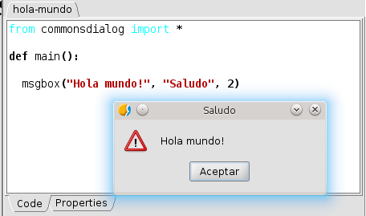
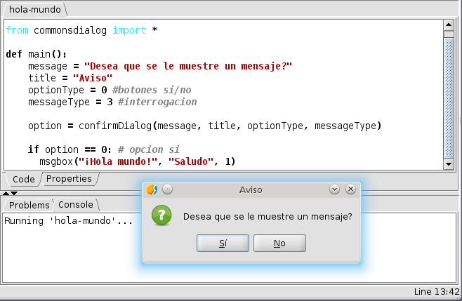
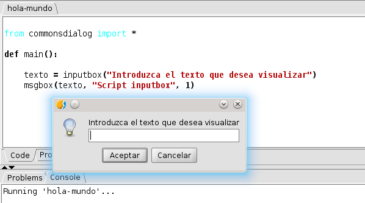

Los diálogos estándard
Los diálogos permiten interactuar con el usuario desde los propios
scripts, ya sea para notificarle algo o para preguntarle alguna
cuestión.
La ventana de mensajes, msgbox
Esta ventana permite mostrar al usuario de gvSIG una ventana con un
texto, sin que el usuario pueda realizar ninguna acción sobre la
ventana mas allá de aceptar.
La ventana se invoca mediante la función msgbox que se encuentra en
el módulo commonsdialog, con la siguiente sintaxis:
msgbox(mensaje [, title, messageType])
- mensaje, string: Texto que se va a mostrar en la
ventana de diálogo
- title, string (opcional): Título de la ventana. Por
defecto no se usa ninguno.
- messageType, int de 0 a 3 (opcional): Determina qué
clase de mensaje es el que estamos mostrando, selecciona un
icono que se mostrará en la ventana. Se utiliza para enfatizar
el tipo de mensaje que se está mostrando al usuario. Las
constantes disponibles son:
- FORBIDEN: Icono prohibido
- IDEA: Icono bombilla
- WARNING: Icono atención
- QUESTION: Icono interrogación
Siguiendo con nuestro script Hola mundo podemos modificarlo para que
en vez de mostrar un texto en el área de notificaciones del editor
de scripts, muestre un aviso al usuario de gvSIG. El código para
nuestro script es el siguiente (ejemplo 1)
import commonsdialog
def main():
commonsdialog.msgbox("Hola mundo!", "Saludo",
commonsdialog.WARNING)
Una vez introducido, lo guardaremos con la opción File/Save,
y ya estaremos listos para ejecutarlo con la opción File/Run.
Observaremos que nos presenta un cuadro de mensajes con el texto ¡Hola
mundo!, como icono el símbolo de atención y el título
de la ventana es Saludo. Además, el usuario únicamente puede
pulsar el botón Aceptar.

Ventana de diálogo msgbox
La ventana de diálogo, confirmDialog
Esta ventana nos permite mostrar al usuario un mensaje y que decida
entre varias opciones, no solo aceptar.
Se invoca mediante la función confirmDialog que se encuentra en el
módulo commonsdialog, con la siguiente sintaxis:
confirmDialog(message,[title, optionType, messageType])
- mensaje, string: Texto que se va a mostrar en la
ventana de diálogo
- title, string (opcional): Título de la ventana. Por
defecto no se usa ninguno.
- optionType, int del 0 al 2: Determina qué botones se ofrecen
al usuario para que pueda pulsar. Las constantes admitidas son :
- YES_NO : botones sí/no.
- YES_NO_CANCEL : botones sí/no/cancel.
- ACEPT_CANCEL : botones aceptar/cancelar.
- messageType, int [03] (opcional): Determina qué clase
de mensaje es el que estamos mostrando, selecciona un icono que
se mostrará en la ventana. Se utiliza para enfatizar el tipo de
mensaje que se está mostrando al usuario. Las constantes
disponibles son:
- FORBIDEN : Icono de prohibido.
- IDEA : Icono de bombilla
- WARNING : Icono de atención.
- QUESTION : Icono de interrogación
Un ejemplo, pensemos que queremos ofrecer al usuario la opción de
elegir si desea que se le muestre un mensaje (ejemplo 2).
import commonsdialog
def main():
message = "Desea que se le muestre un mensaje?"
title = "Aviso"
optionType = commonsdialog.YES_NO
messageType = commonsdialog.QUESTION
option = commonsdialog.confirmDialog(message, title, optionType,
messageType)
if option == 0: # opcion si
commonsdialog.msgbox("¡Hola mundo!", "Saludo",
commonsdialog.IDEA)
El resultado de ejecutar el script se muestra en la siguiente imagen

Ventana de diálogo confirmDialog
La ventana de diálogo, inputbox
La ventana de diálogo inputbox nos permite obtener un valor
facilitado por el usuario del script y trabajar con él. Muestra una
ventana con un cuadro de texto y 2 botones, Aceptar y Cancelar.
Si el usuario pulsa el botón Aceptar el valor que obtenemos es el
contenido de la caja de texto, si por el contrario pulsa el botón Cancelar
el valor devuelto será None.

La ventana de diálogo, inputbox
La ventana se invoca mediante la función inputbox que se encuentra
en el módulo commonsdialog, con la siguiente sintaxis:
inputbox(mensaje)
- mensaje, string: Texto que se va a mostrar en la
ventana de diálogo que deberá facilitar información sobre lo que
el usuario debe introducir.
Podemos crear un script que permita al usuario introducir un texto
que se muestre en una ventana. El código podría ser (ejemplo
3)
import commonsdialog
def main():
titulo = "Script inputbox"
texto = commonsdialog.inputbox(
"Introduzca el texto que desea visualizar")
commonsdialog.msgbox(texto, titulo, commonsdialog.IDEA)
Cuando se ejecute el script, aparecerá una ventana en la que se
podrá introducir un texto que se mostrará cuando el usuario pulse el
botón Aceptar.
Si no queremos que se muestre la ventana de mensajes, si el área de
texto está vacía o si el usuario pulsa el botón Cancelar,
bastará con comprobar el valor de lo que devuelve la función
inputbox.
El siguiente script verifica lo que ha introducido el usuario y en
el caso de que no haya introducido nada o pulse el botón Cancelar
muestra un aviso, en caso contrario muestra el contenido de la caja
de texto (ejemplo 4 )
import commonsdialog
def main():
texto = commonsdialog.inputbox(
"Introduzca el texto que desea visualizar")
if texto:
commonsdialog.msgbox(texto, "Script inputbox",
commonsdialog.IDEA)
else:
commonsdialog.msgbox(
"Debe introducir un texto para continuar.",
"Script inputbox",
commonsdialog.FORBIDEN)
Diálogos de selección de archivos y directorios
En el módulo commonsdialog, existen 3 funciones para la selección de
archivos y directorios.
Las 3 funciones utilizan la misma sintaxis, admiten 2 parámetros
opcionales:
- title string (opcional): Título de la ventana
- initialPath string (opcional): Directorio que se usará
inicialmente cuando se muestre el diálogo.
Si el parámetro initialPath se omite o no es válido intenta
mostrar el directorio del usuario, si no puede obtenerlo, abre el
directorio donde está instalado gvSIG.
Función openFileDialog
Esta función muestra una ventana de diálogo que permite seleccionar
un archivo. Devuelve la ruta absoluta de un fichero que se haya
seleccionado o None en caso de que se cierre la ventana o se
pulse el botón cancelar
La sintaxis es:
openFileDialog([title, initialPath])
- title string (opcional): Título de la ventana
- initialPath string (opcional): Directorio que se usará
inicialmente cuando se muestre el diálogo.
Por ejemplo, queremos obtener la ruta de un shape que está guardado
en la carpeta de cartografía definida en gvSIG. Si no se selecciona
ningún archivo, muestra un mensaje avisando (ejemplo 5).
Se puede definir esta carpeta en gvSIG desde el
diálogo de preferencias, en la rama
General/Carpetas.
import gvsig
import commonsdialog
def main():
path_inicial = gvsig.getDataFolder()
file_path = commonsdialog.openFileDialog("Abrir Archivo",
path_inicial)
if not file_path:
commonsdialog.msgbox("Seleccione un archivo", "Aviso",
commonsdialog.WARNING)
return
#
# Codigo
#
Función saveFileDialog
Esta función muestra una ventana de diálogo que permite seleccionar
un archivo. Devuelve la ruta absoluta de un fichero que se haya
seleccionado o None en caso de que se cierre la ventana o se pulse
el botón cancelar
La sintaxis es:
saveFileDialog([title, initialPath])
- title string (opcional): Título de la ventana
- initialPath string (opcional): Directorio que se usará
inicialmente cuando se muestre el diálogo.
Supongamos que queremos obtener una ruta donde vamos a guardar un
archivo en el directorio temporal del sistema. El código sería
(ejemplo 6):
import tempfile
import commonsdialog
path_inicial = tempfile.gettempdir()
file_path = commonsdialog.saveFileDialog("Guardar Archivo",
path_inicial)
if not file_path:
commonsdialog.msgbox("Seleccione un archivo", "Aviso",
commonsdialog.WARNING)
return
#
# Codigo
#
Función openDirectoryDialog
Esta función muestra una ventana de diálogo que permite seleccionar
un directorio. Devuelve la ruta absoluta de un fichero que se haya
seleccionado o None en caso de que se cierre la ventana o se pulse
el botón cancelar
La sintaxis es:
openFolderDialog([title, initialPath])
- title string (opcional): Título de la ventana
- initialPath string (opcional): Directorio que se usará
inicialmente cuando se muestre el diálogo.
Por ejemplo, queremos obtener la ruta de un directorio y queremos
que se muestre inicialmente el directorio del usuario en el sistema.
Si no se selecciona ningún directorio, muestra un mensaje avisando (ejemplo
7).
import commonsdialog
file_path = commonsdialog.openFolderDialog("Abrir Directorio")
if not file_path:
commonsdialog.msgbox("Seleccione un directorio", "Aviso",
commonsdialog.WARNING)
return
#
# Codigo
#